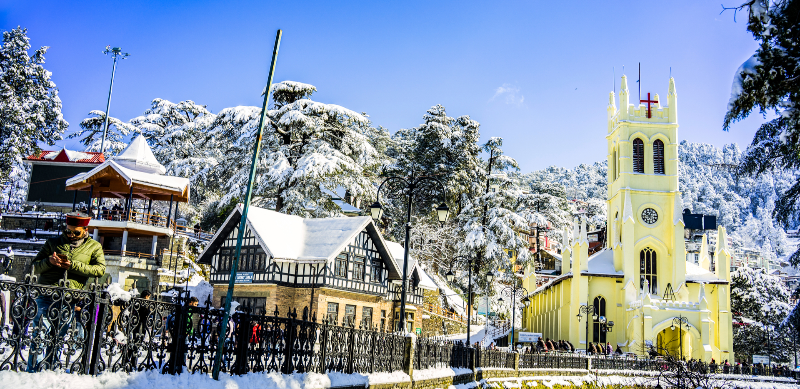
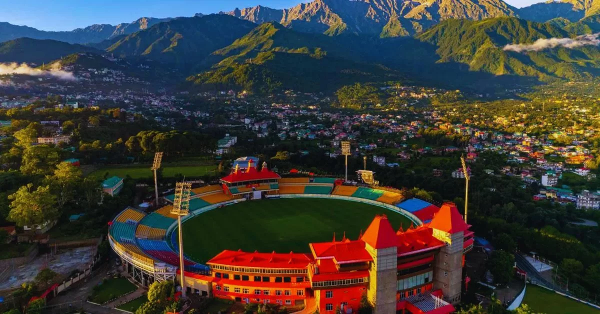
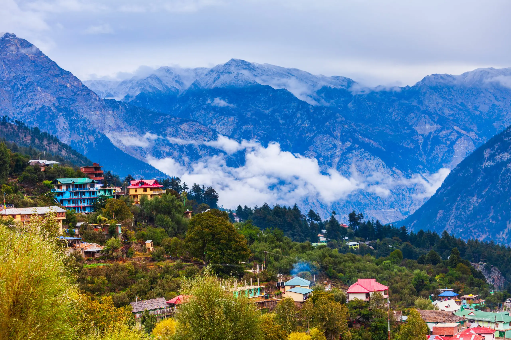
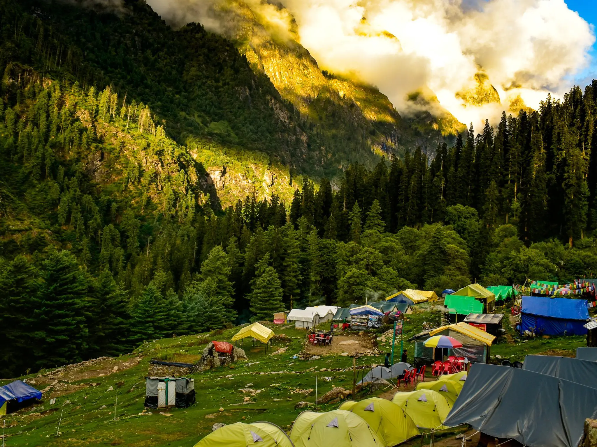
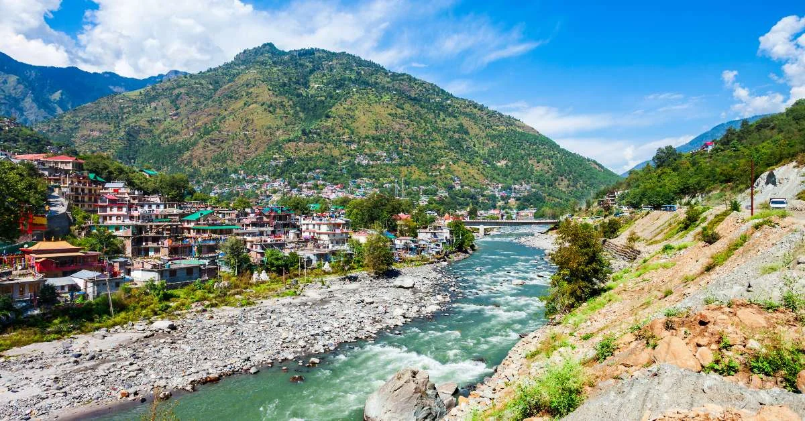
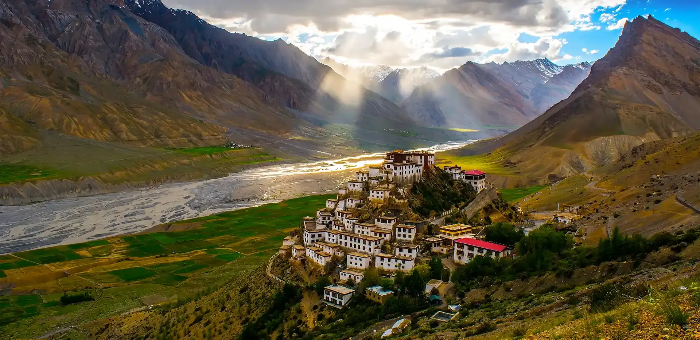
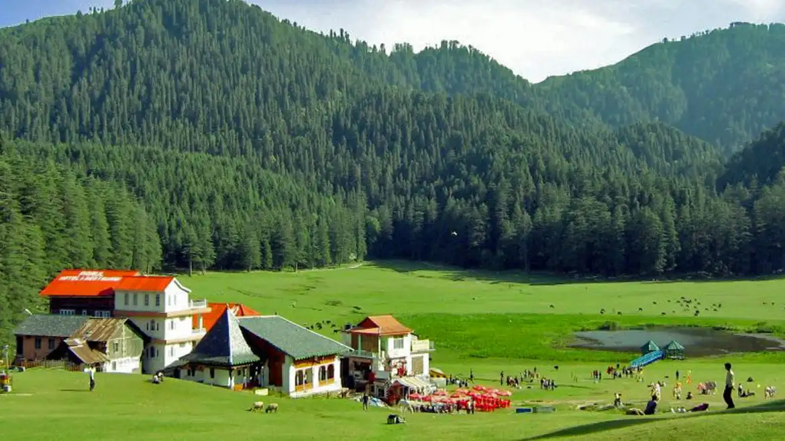
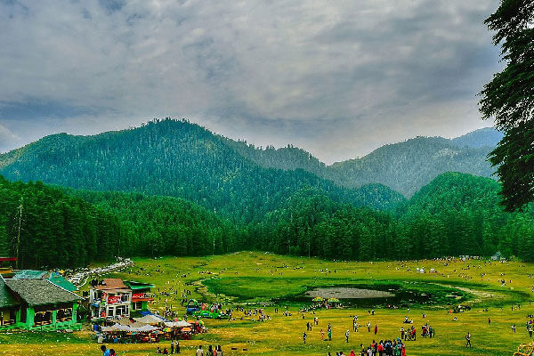
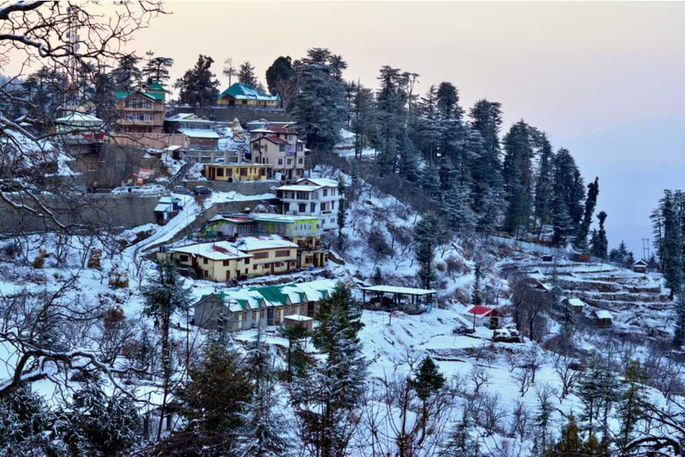

Himachal Pradesh - Land of Hills and Tranquility
Embrace the charm of Himachal Pradesh, a picturesque state nestled in the Himalayas. From spiritual retreats to adventure-filled valleys, Himachal offers something special for every traveler seeking peace or thrill.

Shimla
Capital of Himachal, Shimla is famous for its colonial architecture, Mall Road shopping, scenic views, and the historic toy train ride through lush green hills.

Manali
Manali is a popular hill station known for adventure sports, snow-capped mountains, Solang Valley, and the spiritual vibe of Hidimba Devi Temple.

Dharamshala
Home to the Dalai Lama, Dharamshala offers Tibetan culture, peaceful monasteries, scenic trails, and a cool climate surrounded by cedar forests.

McLeod Ganj
A suburb of Dharamshala, McLeod Ganj is rich in Tibetan culture, lively cafes, Bhagsu Waterfall, and spiritual retreats for yoga and meditation.

Kasol
Located in Parvati Valley, Kasol is a haven for backpackers. Known for Israeli cafes, scenic hikes, and the calm flow of the Parvati River.

Kullu
Famous for its valley views, temples, festivals, and river rafting, Kullu is an essential stop on any Himachal itinerary, especially during Dussehra.

Spiti Valley
A cold desert mountain valley, Spiti offers monasteries, moon-like landscapes, high-altitude lakes, and an adventurous ride through winding roads.

Chamba
A historic town on the banks of Ravi River, Chamba is known for ancient temples, miniature paintings, and cultural festivals like Minjar Mela.

Khajjiar
Often called the 'Mini Switzerland of India', Khajjiar features lush meadows, a lake, deodar forests, and horse riding under clear blue skies.

Kufri
Close to Shimla, Kufri is a popular spot for skiing, yak rides, and panoramic views of snow-covered peaks. It’s a winter delight for families.
Tour Details
- Duration: 8 Days / 7 Nights
- Best Time to Visit: March to June & September to December
- Price: ₹18,000 per person
- Includes: Accommodation, Local Transport, Sightseeing, Breakfast & Dinner